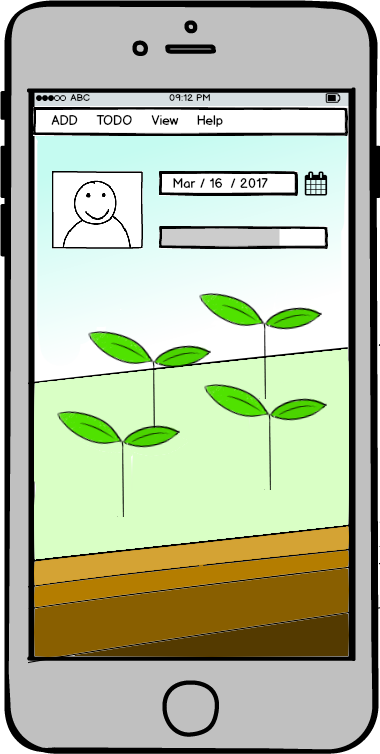

分類群組
把待辦事項分門別類，不只更好管理，還可以更快找出特定任務。tag標籤讓您可以更有彈性的使用管理待辦事項。

雲端同步
不論何時何處皆可隨意查看，資料自動備份在雲端不怕遺失。

圖表分析
透過圖形化的統計，更能一目了然各個事項的比重以及任務的完成進度。

追溯過去的足跡
歷史紀錄讓您更容易掌控生活的節奏。根據過去的完成紀錄改善新的計劃，讓您成為時間的主人。

充滿趣味
透過完成任務來獲得更多種子，一起來經營屬於自己的農場吧！成熟的作物可以兌換成更具有特色的主題，讓您的TODO Farm更具有個人風格。

互助系統
怕無法如期達成目標嗎？讓朋友監督你的進度吧！